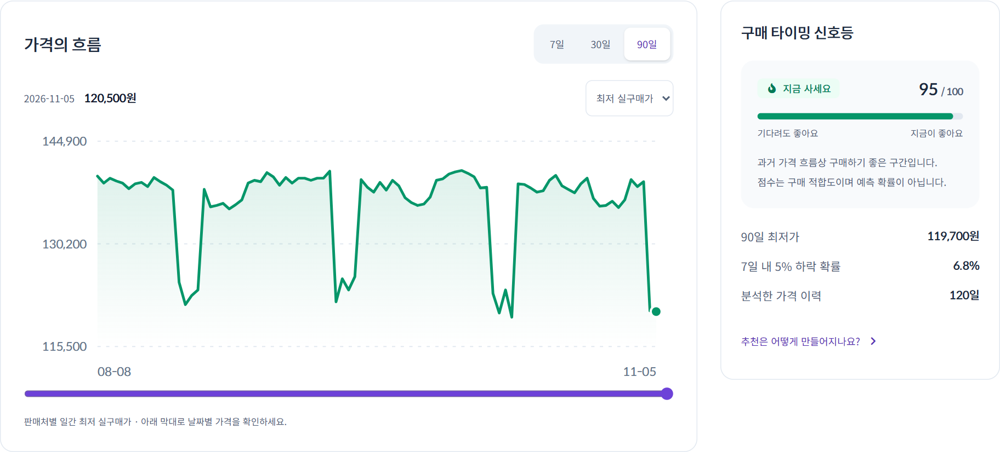
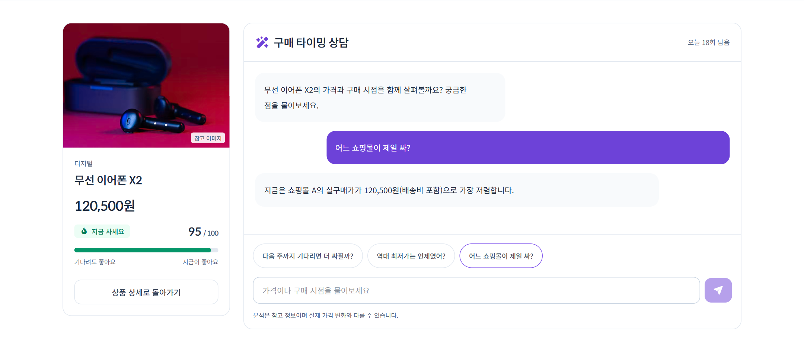
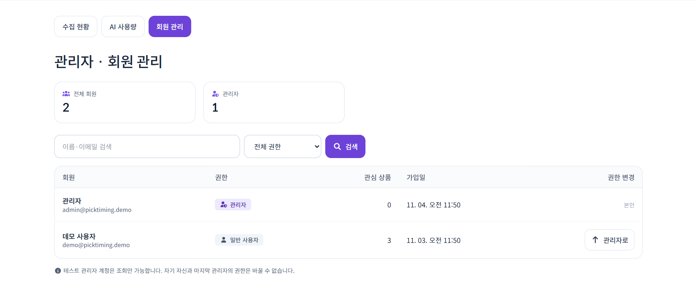

먼저, 60초로 만나보세요.
본편에서 골라낸 핵심 시연입니다.
숫자가 구매 결정의 근거가 되는 과정을 보여줍니다.
60초 하이라이트
비교하고, 흐름을 읽고,
판단의 이유를 확인합니다.
배송비를 포함한 실구매가, 기간별 가격 흐름, 구매 타이밍 점수를 하나의 상품 화면에서 확인합니다.
- 비교 판매가와 배송비를 합친 실구매가
- 분석 7일·30일·90일 가격 흐름과 적기 점수
- 설명 분석 근거를 풀어주는 AI 구매 조언
본편 04:25–05:25 발췌. 화면의 상품·가격은 데모 데이터입니다.
사용자의 질문을 화면으로.
탐색부터 구매 판단, 서비스 운영까지.
실제 구현된 화면에서 프로젝트의 범위를 확인하세요.

지금 가격은 괜찮을까?
판매처별 가격 비교와 가격 이력을 연결하고, 목표가 알림으로 다음 행동까지 이어줍니다.
상품 상세 체험
왜 지금 사야 할까?
분석 결과를 쉬운 말로 설명하고, 이어지는 질문은 상품 맥락을 유지한 채 상담합니다.
AI 답변 검증 코드
누가 어디까지 할 수 있을까?
하나의 로그인에서 사용자와 관리자를 구분합니다. 서버도 역할을 검사하고 테스트 관리자의 변경을 막습니다.
역할별 테스트 로그인화면은 Netlify 데모를 캡처했습니다. 데모의 AI는 규칙 기반 응답이며, 관리자 지표는 운영 성과를 나타내지 않습니다.
동작하는 화면 뒤의
설계와 선택.
여러 판매처의 가격을 같은 기준으로 모으고, 분석하고, 설명하는 흐름을 만들었습니다. 데이터 신뢰성과 운영 제약을 함께 고려했습니다.
- 1수집RPA · 요청 간격과 재시도 · robots.txt 확인
- 2저장FastAPI + TiDB · 같은 시간대의 중복 기록 방지
- 3판단scikit-learn · 가격 위치와 하락 가능성으로 점수 계산
- 4설명과 알림Gemini 답변 검증 · 목표가 알림 · React 화면
AI가 만든 숫자를 그대로 믿지 않기
AI에는 분석된 사실을 전달하고, 응답의 숫자를 입력과 대조합니다. 검증에 실패하면 다시 요청하고, 반복 실패 시 정해진 설명으로 대체합니다.
구현 근거 보기
구현 근거 보기
두 수집기가 기록해도, 가격 이력은 한 번만
Render용 예약 수집과 EC2 수집기가 같은 DB를 사용하므로, 같은 판매처·같은 시간대의 중복 적재를 막습니다. 수집 경로가 늘어도 가격 이력이 중복되지 않도록 설계했습니다.
수집 흐름과 제약 보기
수집 흐름과 제약 보기
무료 서버의 제약을 실행 구조로 풀기
Netlify는 서버 연결 없는 데모로, Render는 FastAPI와 화면을 함께 제공하는 서비스로 구성했습니다. Render의 가격 수집은 GitHub Actions에서 예약 실행해 상주 스케줄러를 분리했습니다.
배포·자동화 구조 보기
배포·자동화 구조 보기
- 화면
- React 19 · Vite · Tailwind CSS
- 서버·DB
- Python · FastAPI · SQLAlchemy · TiDB
- 데이터·AI
- Requests · BeautifulSoup · scikit-learn · Gemini
- 검증·배포
- pytest · Playwright · Docker · GitHub Actions
다음에 검증할 것
실제 데이터 기준 모델 성능과 AI 품질은 추가 측정이 필요합니다. 판정 적중률을 집계하고 알림 경험을 개선하는 것이 다음 단계입니다.
결과와 과정, 모두 열어두었습니다.
영상에서 궁금했던 설계는 발표자료에서,
구현의 근거는 코드와 문서에서 확인하세요.
함께 만든 사람들
3조 팀 프로젝트 · 팀원명은 가상 인물로 표기했습니다.